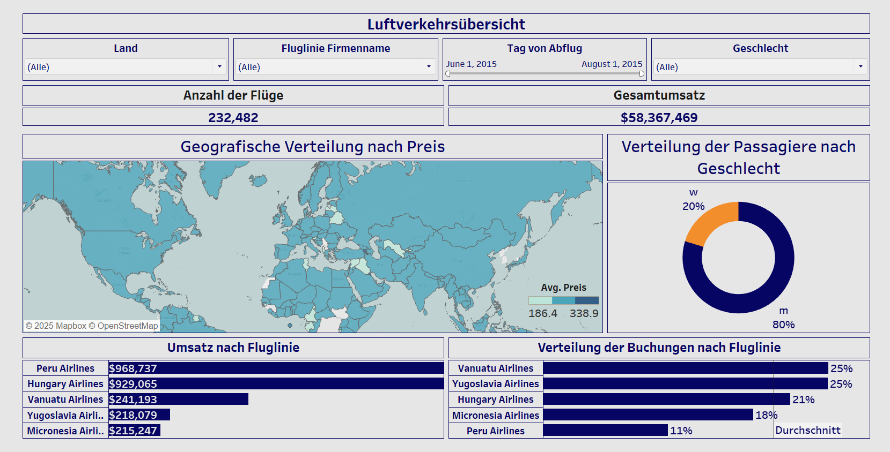
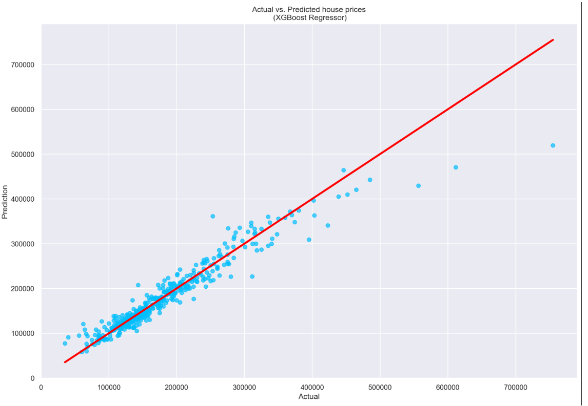

Project 1: Global Data-related Job Analysis and Salary Prediction with ML
Scraped job listings worldwide, cleaned data using pandas, and built machine learning models to predict salary ranges.


Data analyst with a passion for data-driven insights, machine learning, and visualization.
Scraped job listings worldwide, cleaned data using pandas, and built machine learning models to predict salary ranges.
Analyzed airport traffic patterns and visualized delays using interactive dashboards. Used Streamlit for deployment.
Used advanced regression models to predict house prices. Feature engineering, model tuning and evaluation included.
